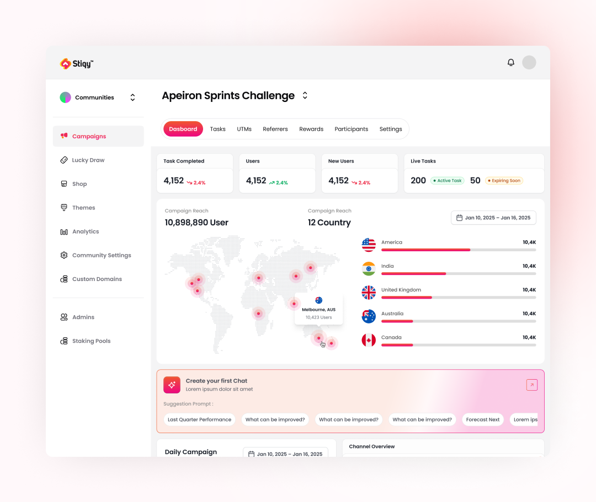
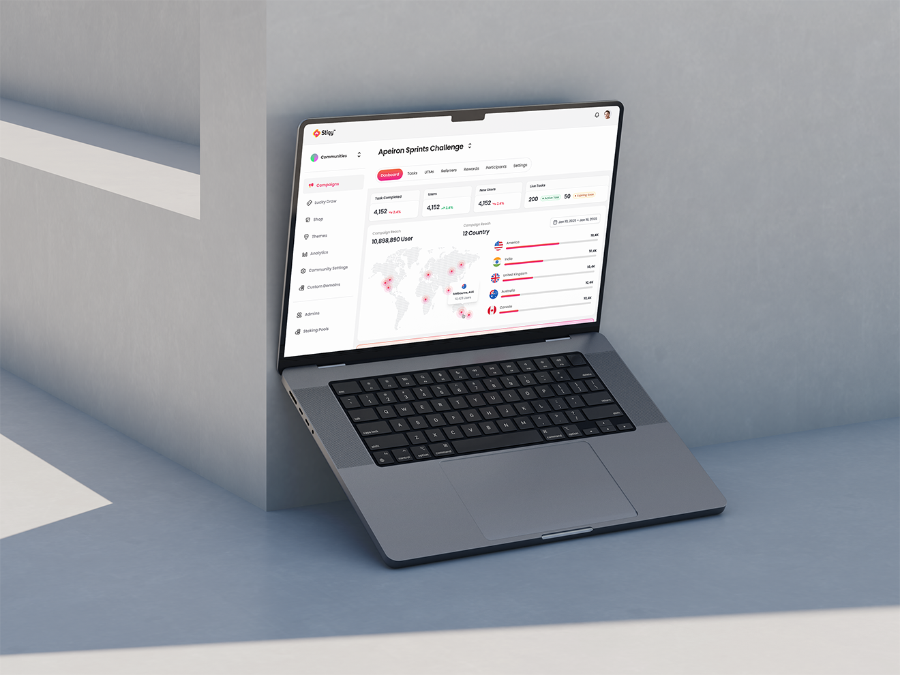
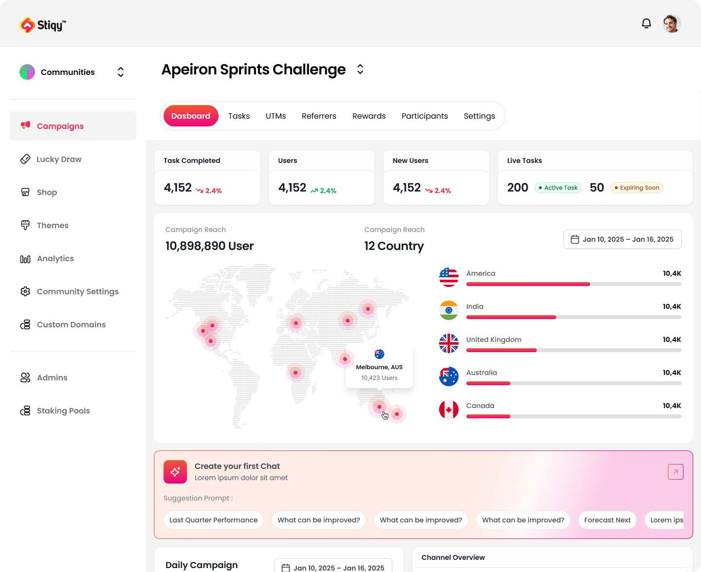
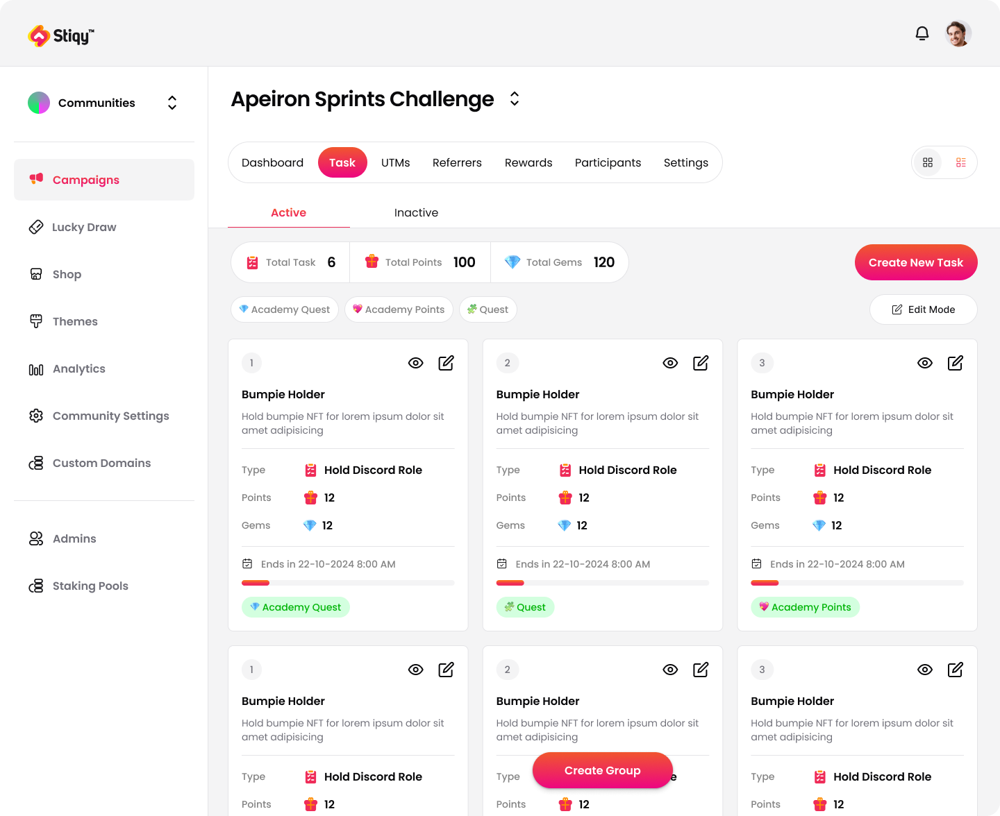
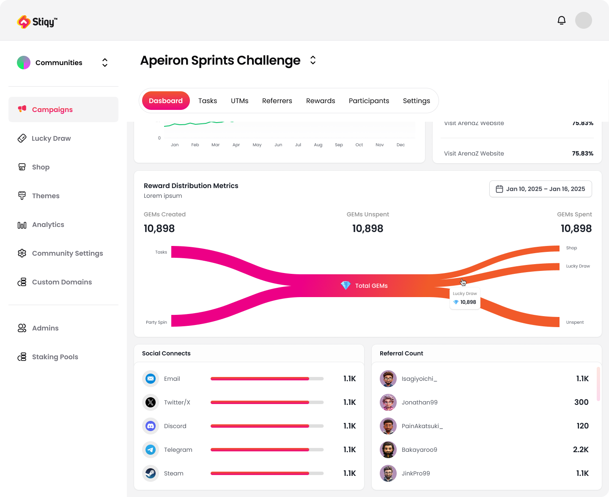
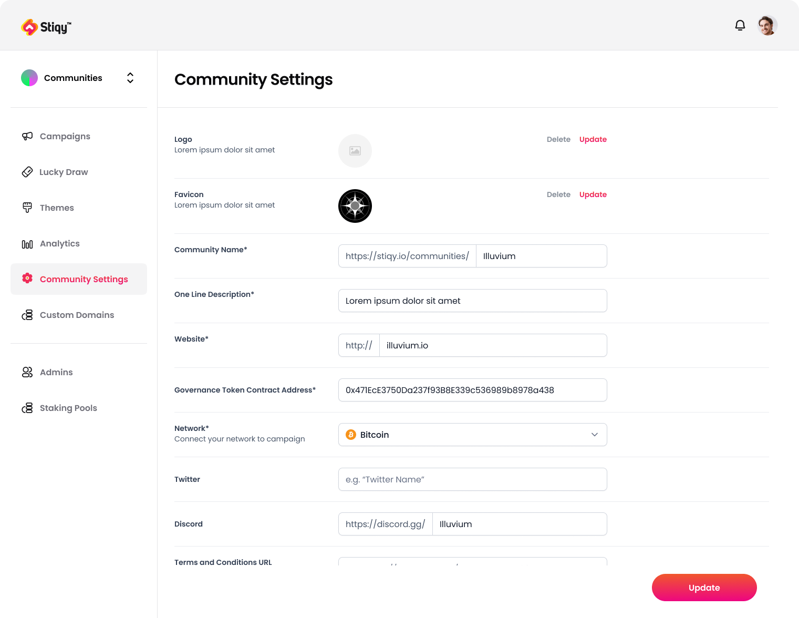

Stiqy Rewards Dashboard
A partner sets one task, clear five levels in their game, and Stiqy turns it into a reward a player claims on a page outside the game itself, spent on gear, a prize, or whatever the campaign is paying out.
Visit stiqy.io- Client
- Sector
- Role
- Team
- Period
- Surface

Overview
Stiqy is the reward layer a game studio plugs into its own title: a partner sets a task, say, clear five levels, and Stiqy tracks who finished it, pays it out in GEMs, and hosts the claim page a player uses outside the game client. I designed the half of the dashboard the partner actually runs the campaign from: tasks, GEMs, referrals, and the white-label setup a community sees before a single campaign goes live.

Scope
- 01Stakeholder interviews
- 02Competitive teardown
- 03Task & reward taxonomy
- 04User flows
- 05Wireframes
- 06Interface design
- 07Data visualisation
- 08Design system
- 09Prototyping
- 10Design QA
Problem
A task completed in the game and a reward claimed outside it had no single record.
A partner running a reward campaign for their own game needs one thing to hold: a player clears five levels inside the game, a custom API call tells Stiqy, and a reward is waiting on a claim page hosted outside the game client, not a spreadsheet an admin updates by hand. At a volume that had already crossed 550,000 completed tasks, tasks sat in one module, GEM balances in another, and the lucky draw or shop that spent those GEMs in a third, each built before anyone asked how a manager was supposed to answer one plain question: did the reward actually reach the player who cleared the level? Cross-checking a single participant meant three tabs open at once.
Launching a campaign for a new game made it worse. Logo, domain, governance token, and socials, the fields a white-label claim page needs to read like the partner's own game rather than a generic Stiqy page, had no home of their own, so setup requests turned into a support thread instead of a form someone could fill in and launch from.
Approach
One flow from a level cleared to a reward claimed, one screen for making the claim page look like the partner's own game.
Task cards carry their own economics now: points and GEMs sit on the card itself, next to the type of action being rewarded, a social quest, an on-chain check, or a custom API event fired the moment a player clears a level, and active and inactive quests split into their own tabs so a manager scans six live tasks instead of scrolling past forty finished ones.
A single flow diagram replaces the spreadsheet: GEMs created from Tasks and Party Spin, spent through the Shop or Lucky Draw on gear, merch, or whatever the campaign is paying out, or left Unspent, read left to right, no legend needed, next to the referral leaderboard those same GEMs are funding, the loyalty loop Stiqy calls Passive Yield Rewards.
Community Settings collects everything a white-label claim page needs, logo, favicon, domain, governance token contract, network, socials, on one form with one Update button, so a partner launching a reward campaign for their next game takes minutes, not a ticket.
Screens



